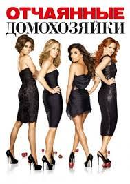
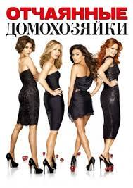

"Дом дракона" (House of the Dragon)
Жанр: фэнтези, драма, приключения
Спин-офф сериала «Игра престолов», основанный на романе Джорджа Р. Р. Мартина «Огонь и кровь». Сюжет
фокусируется на династии Таргариенов и их борьбе за Железный трон за 200 лет до событий «Игры престолов». В
первом сезоне разворачивается конфликт между двумя претендентами на трон — Рейнирой Таргариен и её сводным
братом Аэгоном II, что приводит к кровавой гражданской войне, известной как Танец драконов. В сериале
исследуются интриги, семейные отношения и борьба за власть, а также зрелищные сцены с драконами.
"Ведьмак" (The Witcher), сезон 5
Жанр: фэнтези, драма, приключения
Продолжение истории Геральта из Ривии. В пятом сезоне Геральт и его спутники сталкиваются с новыми опасностями,
связанными с магией, древними существами и политическими интригами в Севере. Кроме того, новые персонажи и таинственные
организации вносят свежие элементы в сюжет.
"Берлин" (Berlin)
Жанр: криминальная драма, триллер
Спин-офф сериала «Бумажный дом». Сюжет сосредоточен на жизни Андреса де Фонольи (Берлин) до событий основного шоу.
В сериале раскрывается его криминальное прошлое, сложные отношения с партнёрами и врагами, а также борьба с болезнью,
которая влияет на его решения. Берлин предстает не только как харизматичный манипулятор, но и как человек с внутренними конфликтами,
переживающий драматические моменты. Новые персонажи и криминальные операции вносят свежие элементы в сюжет.
"Эмили в Париже" (Emily in Paris), сезон 5
Жанр: романтическая комедия, драма
Продолжение истории Эмили Купер, молодой маркетолог, которая переехала в Париж и столкнулась с вызовами французской культуры,
профессиональной жизни и романтических приключений. В пятом сезоне Эмили продолжает адаптироваться к жизни в Париже,
сталкиваясь с новыми карьерными возможностями, сложными отношениями и неожиданными поворотами в личной жизни.
Новые знакомства, культурные разногласия и новые приключения в модной индустрии вносят свежие повороты в её жизнь.
"Черная Вдова" (Black Widow), сезон 5
Жанр: экшн, шпионский триллер
В новом сезоне героям предстоит раскрыть заговоры, связанные с международной преступностью и тайными организациями.
Главная героиня сталкивается с личными проблемами и угрозами, от которых зависит не только её судьба, но и безопасность целых стран.